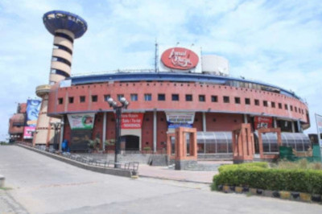

Malls
1. Ansal Plaza

Ansal Plaza is part of a massive complex - HUDCO Place, built on 35 acres of land and remains one of the most monumental and prestigious achievements of Delhi till date. HUDCO Place is situated at a very strategic location, just half a kilometer from south Delhi's major commercial hub, South Extension - in the very midst of posh colonies.
Location: HUDCO Place, Khelgaon Marg, New Delhi